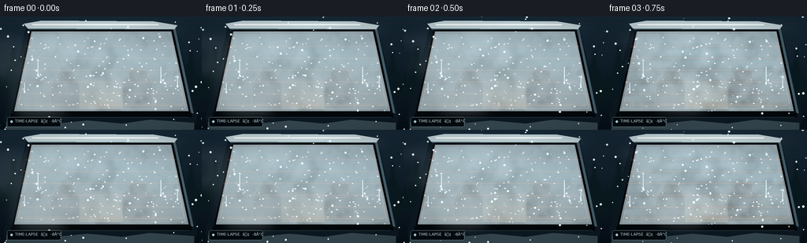
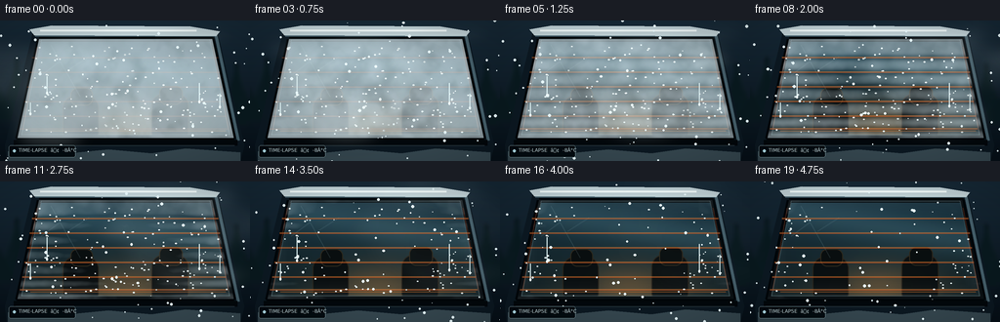

CODING AGENTS AS PIXEL WORLD MODELS
traex/GPT-5.6-Sol · phygen_102
点击播放 · 原生 RGB 像素
逐轮保存的候选
回放视频、检查图与代码变化。
每份候选均可单独播放。实际图片检查记录在下方工具轨迹中。
候选 01播放与检查图
点击播放 · 原生 RGB 像素


展开代码变化
--- 上一保存版本
+++ 本次保存版本
@@ -0,0 +1,228 @@
+from pathlib import Path
+import math
+import numpy as np
+import cv2
+from PIL import Image, ImageDraw, ImageFilter, ImageFont
+import artifact_io
+
+W,H,N = 256,144,20
+S=3
+WW,HH=W*S,H*S
+rng=np.random.default_rng(102)
+
+def smooth(a,b,x):
+ z=np.clip((x-a)/(b-a),0,1)
+ return z*z*(3-2*z)
+
+def fractal(h,w,seed,octaves=((7,5,1.0),(14,9,.52),(29,17,.25),(58,34,.12))):
+ rr=np.random.default_rng(seed)
+ out=np.zeros((h,w),np.float32); total=0
+ for nx,ny,amp in octaves:
+ small=rr.normal(.5,.22,(ny,nx)).astype(np.float32)
+ layer=cv2.resize(small,(w,h),interpolation=cv2.INTER_CUBIC)
+ out += amp*layer; total += amp
+ out/=total
+ return np.clip(out,0,1)
+
+# window geometry at full resolution
+poly=np.array([[40,19],[217,19],[239,120],[18,120]],np.int32)*S
+winmask=np.zeros((HH,WW),np.uint8)
+cv2.fillConvexPoly(winmask,poly,255,lineType=cv2.LINE_AA)
+wm=winmask.astype(np.float32)/255
+Y,X=np.mgrid[0:HH,0:WW]; xn=X/S; yn=Y/S
+base_noise=fractal(HH,WW,110)
+fine_noise=fractal(HH,WW,212,((23,13,1),(48,27,.4),(96,54,.16)))
+# permanent tiny drops positions on glass
+specks=[]
+for j in range(155):
+ x=float(rng.uniform(25,233)); y=float(rng.uniform(24,115))
+ if wm[int(y*S),int(x*S)]>.5:
+ specks.append((x,y,float(rng.uniform(.25,1)),float(rng.uniform(0,6.28))))
+# snow positions
+snow=[]
+for j in range(100):
+ snow.append((float(rng.uniform(-20,276)),float(rng.uniform(-30,160)),float(rng.uniform(.3,1.5)),float(rng.uniform(.5,1.8))))
+
+def base_scene():
+ # cold twilight background then car body
+ yy=np.linspace(0,1,HH)[:,None,None]
+ top=np.array([24,42,55],float); bot=np.array([8,17,25],float)
+ arr=np.tile(top*(1-yy)+bot*yy,(1,WW,1))
+ # distant trees through atmosphere
+ im=Image.fromarray(np.uint8(np.clip(arr,0,255)),'RGB'); d=ImageDraw.Draw(im,'RGBA')
+ # blurred conifer silhouettes behind car
+ for x,hgt in [(-5,54),(17,67),(242,61),(264,48),(229,44)]:
+ xx=x*S; base=105*S
+ d.rectangle((xx-2*S,base-hgt*S,xx+2*S,base),fill=(7,19,25,190))
+ for k in range(5):
+ yy0=(base-hgt*S)+(k+1)*hgt*S/7
+ wid=(k+1)*5*S
+ d.polygon([(xx,yy0-12*S),(xx-wid,yy0+15*S),(xx+wid,yy0+15*S)],fill=(10,26,31,170))
+ im=im.filter(ImageFilter.GaussianBlur(1.7*S))
+ d=ImageDraw.Draw(im,'RGBA')
+ # main car silhouette / metal around window
+ d.polygon([(34*S,10*S),(222*S,10*S),(250*S,128*S),(246*S,144*S),(7*S,144*S),(5*S,128*S)],
+ fill=(13,25,34,255))
+ # metallic rim highlights
+ d.line([(36*S,15*S),(221*S,15*S),(244*S,123*S)],fill=(91,121,133,180),width=3*S)
+ d.line([(14*S,125*S),(243*S,125*S)],fill=(4,9,13,255),width=6*S)
+ d.line([(16*S,128*S),(240*S,128*S)],fill=(74,95,103,100),width=1*S)
+ # icy snow cap on roof
+ d.polygon([(30*S,9*S),(53*S,5*S),(195*S,6*S),(225*S,11*S),(221*S,16*S),(35*S,15*S)],
+ fill=(199,216,220,238))
+ d.line([(41*S,10*S),(201*S,10*S)],fill=(242,249,248,220),width=2*S)
+ # snow banks on lower car
+ d.polygon([(8*S,134*S),(38*S,130*S),(70*S,136*S),(111*S,132*S),(155*S,136*S),(190*S,131*S),(246*S,135*S),(246*S,144*S),(8*S,144*S)],fill=(105,129,136,110))
+ return im
+
+BASE=base_scene()
+
+def draw_window(frame,t):
+ # base glass scene as RGB array, then paste by mask
+ glass=np.zeros((HH,WW,3),np.float32)
+ # upper cold blue to warm lower interior gradient
+ gy=np.clip((yn-18)/104,0,1)[...,None]
+ glass[:] = np.array([24,48,60])*(1-gy)+np.array([18,31,34])*gy
+ # subtle warm cabin light, strongest at lower center
+ glow=np.exp(-(((xn-133)/72)**2+((yn-110)/34)**2)*1.7)[...,None]
+ glass += glow*np.array([63,38,15])
+ # fine reflected sky diagonal
+ refl=np.exp(-((yn-(45+.15*(xn-128))) / 18)**2)[...,None]
+ glass += refl*np.array([18,26,28])
+ ga=Image.fromarray(np.uint8(np.clip(glass,0,255)),'RGB')
+ dg=ImageDraw.Draw(ga,'RGBA')
+ # faint interior headrests/seats revealed after fog clears
+ dg.rounded_rectangle((64*S,77*S,101*S,126*S),radius=12*S,fill=(8,13,15,230),outline=(85,67,46,100),width=1*S)
+ dg.rounded_rectangle((155*S,75*S,193*S,126*S),radius=12*S,fill=(8,13,15,230),outline=(85,67,46,100),width=1*S)
+ dg.rounded_rectangle((72*S,69*S,95*S,87*S),radius=7*S,fill=(10,15,16,255),outline=(97,75,47,100),width=S)
+ dg.rounded_rectangle((163*S,67*S,187*S,86*S),radius=7*S,fill=(10,15,16,255),outline=(97,75,47,100),width=S)
+ # amber rear shelf line
+ dg.line([(31*S,113*S),(231*S,113*S)],fill=(169,91,32,150),width=S)
+ # reflections of bare tree branches
+ for off in (0,):
+ dg.line([(52*S,25*S),(82*S,78*S)],fill=(148,184,192,35),width=S)
+ dg.line([(61*S,42*S),(42*S,56*S)],fill=(148,184,192,28),width=S)
+ dg.line([(69*S,51*S),(91*S,37*S)],fill=(148,184,192,25),width=S)
+ # composite into frame
+ frame.paste(ga,(0,0),Image.fromarray(winmask))
+ d=ImageDraw.Draw(frame,'RGBA')
+ # thick rubber gasket
+ points=[tuple(p) for p in poly.tolist()]
+ d.line(points+[points[0]],fill=(2,7,10,255),width=5*S,joint='curve')
+ d.line([(42*S,20*S),(215*S,20*S),(235*S,117*S),(22*S,117*S),(42*S,20*S)],fill=(102,130,137,100),width=S,joint='curve')
+ # rear defroster lines: warmer/brighter as active
+ heat=smooth(0.05,.38,t)
+ for y in [38,53,68,83,98,111]:
+ xl=36-(y-20)*.17; xr=221+(y-20)*.13
+ d.line([(xl*S,y*S),(xr*S,y*S)],fill=(198,82,31,int(80+95*heat)),width=S)
+ if heat>.3:
+ d.line([(xl*S,(y-.65)*S),(xr*S,(y-.65)*S)],fill=(255,173,74,int(25+35*heat)),width=S)
+ # side bus bars
+ d.line([(38*S,27*S),(23*S,112*S)],fill=(145,61,31,100),width=S)
+ d.line([(218*S,27*S),(234*S,112*S)],fill=(145,61,31,100),width=S)
+
+def condensation_layer(t):
+ # time-lapse clearing after cold fog settles: heat lines clear first, central warmth expands
+ p=smooth(.08,.95,t)
+ # glass coordinate and edge preference
+ edge=np.minimum.reduce([np.maximum(0,(xn-18)/24),np.maximum(0,(239-xn)/24),np.maximum(0,(yn-18)/18),np.maximum(0,(121-yn)/20)])
+ edge=np.clip(edge,0,1)
+ radial=np.sqrt(((xn-128)/120)**2+((yn-74)/72)**2)
+ center_clear=np.clip(1-radial,0,1)
+ # heat around lines becomes clear early
+ dist=np.ones_like(xn)*99
+ for ly in [38,53,68,83,98,111]: dist=np.minimum(dist,np.abs(yn-ly))
+ lineheat=np.exp(-(dist/3.4)**2)
+ clear_amount=p*(.76+1.0*center_clear)+smooth(.05,.55,t)*.46*lineheat
+ # structured micro-condensation opacity
+ raw=.56+.40*base_noise+.16*fine_noise
+ alpha=raw-clear_amount
+ alpha=np.clip(alpha,0,.82)
+ # retain a delicate wet icy rim
+ rim=(1-edge)*(.24*(1-p*.65))
+ alpha=np.maximum(alpha,rim*(.65+.35*base_noise))*wm
+ # pearly color, slightly blue at edges
+ col=np.empty((HH,WW,4),np.uint8)
+ col[...,0]=np.uint8(196+20*fine_noise)
+ col[...,1]=np.uint8(215+18*fine_noise)
+ col[...,2]=np.uint8(220+22*fine_noise)
+ col[...,3]=np.uint8(alpha*220)
+ return Image.fromarray(col,'RGBA')
+
+def external_fog(t):
+ # rolling cold mist contacts pane from left, then curls upward and evaporates
+ layer=Image.new('RGBA',(WW,HH),(0,0,0,0)); d=ImageDraw.Draw(layer,'RGBA')
+ # strong plume initially moves across the pane, thinning markedly over time
+ strength=(1-smooth(.28,1.0,t))
+ advance=38+118*smooth(0,.43,t)
+ rr=np.random.default_rng(800)
+ for j in range(27):
+ phase=rr.uniform(0,6.28); bx=rr.uniform(-30,72); by=rr.uniform(26,121)
+ x=bx + advance + 10*math.sin(phase+t*4.0) + 25*t
+ y=by - 21*t + 6*math.sin(phase*1.7+t*3)
+ rx=rr.uniform(14,38)*(1+.35*t); ry=rr.uniform(6,18)*(1+.2*t)
+ a=int((16+42*rr.random())*strength)
+ d.ellipse(((x-rx)*S,(y-ry)*S,(x+rx)*S,(y+ry)*S),fill=(218,232,233,a))
+ # contact curl near upper-right remains as faint vapor
+ for j in range(7):
+ x=165+j*10+9*math.sin(t*5+j); y=28-j*2-12*t
+ a=int(32*(1-smooth(.5,1,t)))
+ d.ellipse(((x-18)*S,(y-5)*S,(x+18)*S,(y+5)*S),fill=(225,237,238,a))
+ return layer.filter(ImageFilter.GaussianBlur(8*S))
+
+def add_drops(frame,t):
+ d=ImageDraw.Draw(frame,'RGBA'); p=smooth(.08,.95,t)
+ for x,y,size,phase in specks:
+ # droplets evaporate from center, linger at rim
+ rad=math.sqrt(((x-128)/115)**2+((y-72)/68)**2)
+ survival=np.clip(rad*.78 + .48 - p,0,1)
+ if survival<=.04: continue
+ # selected drops elongate slightly before vanishing
+ drift=max(0, t-.15)*size*2.2 if int(phase*10)%9==0 else 0
+ yy=y+drift
+ r=(.35+size*.7)*S
+ a=int(50+120*survival)
+ d.ellipse((x*S-r,yy*S-r*.7,x*S+r,yy*S+r*.7),fill=(210,232,234,int(a*.22)),outline=(239,249,248,a),width=max(1,S//2))
+ d.ellipse((x*S-r*.45,yy*S-r*.45,x*S-r*.05,yy*S-r*.05),fill=(255,255,255,int(a*.7)))
+ # a few downward condensation trails, shorten/fade
+ fade=1-smooth(.35,.95,t)
+ for x,y0,L in [(48,57,26),(204,64,29),(31,84,17),(225,75,20)]:
+ if fade>.03:
+ d.line([(x*S,y0*S),(x*S,(y0+L*(.65+.35*t))*S)],fill=(222,242,244,int(85*fade)),width=S)
+ d.ellipse(((x-1)*S,(y0+L*(.65+.35*t)-1)*S,(x+1)*S,(y0+L*(.65+.35*t)+2)*S),fill=(238,250,250,int(120*fade)))
+
+def add_snow(frame,t):
+ d=ImageDraw.Draw(frame,'RGBA')
+ for x,y,r,spd in snow:
+ xx=(x+11*t*spd)%286-15; yy=(y+33*t*spd)%190-25
+ # in foreground, sparse and cold
+ a=80 if r<1 else 145
+ d.ellipse(((xx-r)*S,(yy-r)*S,(xx+r)*S,(yy+r)*S),fill=(226,241,244,a))
+ # warm/cold cue caption embedded like dashboard camera overlay
+ try: font=ImageFont.truetype('/usr/share/fonts/truetype/dejavu/DejaVuSans.ttf',5*S)
+ except: font=None
+ d.rounded_rectangle((9*S,128*S,77*S,140*S),radius=2*S,fill=(4,12,17,145),outline=(154,184,190,75),width=1)
+ d.ellipse((13*S,132*S,16*S,135*S),fill=(176,220,231,220))
+ d.text((19*S,130*S),'TIME-LAPSE ⢠-8°C',font=font,fill=(209,227,230,210))
+
+def make_frame(i):
+ t=i/(N-1)
+ frame=BASE.copy()
+ draw_window(frame,t)
+ frame=Image.alpha_composite(frame.convert('RGBA'),condensation_layer(t))
+ add_drops(frame,t)
+ # vapor is above glass and frame, showing mist physically washing over car
+ frame=Image.alpha_composite(frame,external_fog(t))
+ add_snow(frame,t)
+ # restrained cinematic grade / vignette
+ arr=np.asarray(frame.convert('RGB')).astype(np.float32)
+ yy,xx=np.mgrid[0:HH,0:WW]
+ vig=1-.20*np.clip(((xx-WW/2)/(WW*.71))**2+((yy-HH/2)/(HH*.70))**2,0,1)
+ arr*=vig[...,None]
+ arr=np.clip((arr-18)*1.08+18,0,255).astype(np.uint8)
+ out=Image.fromarray(arr).resize((W,H),Image.Resampling.LANCZOS)
+ return np.asarray(out,dtype=np.uint8)
+
+frames=np.stack([make_frame(i) for i in range(N)])
+artifact_io.save(frames,Path(__file__).resolve().parent)
+print('saved',frames.shape,frames.dtype)
可观测工具轨迹
实际执行的命令与返回图片。
命令 1exit 0
/bin/bash -lc "cat prompt.txt && printf '\\n---RULES---\\n' && cat GENERATION_RULES.md && printf '\\n---SPEC---\\n' && cat task_spec.json"
命令 2exit 0
/bin/bash -lc "find . -maxdepth 2 -type f -printf '%p\\n' | sort | head -200"
命令 3exit 0
/bin/bash -lc "sed -n '1,240p' artifact_io.py"
命令 4exit 0
/bin/bash -lc "python - <<'PY'
import PIL, numpy
print(PIL.__version__, numpy.__version__)
try:
import cv2; print('cv2',cv2.__version__)
except Exception as e: print('no cv2')
PY"命令 5exit 0
/bin/bash -lc "cat > generate.py <<'PY'
from pathlib import Path
import math
import numpy as np
import cv2
from PIL import Image, ImageDraw, ImageFilter, ImageFont
import artifact_io
W,H,N = 256,144,20
S=3
WW,HH=W*S,H*S
rng=np.random.default_rng(102)
def smooth(a,b,x):
z=np.clip((x-a)/(b-a),0,1)
return z*z*(3-2*z)
def fractal(h,w,seed,octaves=((7,5,1.0),(14,9,.52),(29,17,.25),(58,34,.12))):
rr=np.random.default_rng(seed)
out=np.zeros((h,w),np.float32); total=0
for nx,ny,amp in octaves:
small=rr.normal(.5,.22,(ny,nx)).astype(np.float32)
layer=cv2.resize(small,(w,h),interpolation=cv2.INTER_CUBIC)
out += amp*layer; total += amp
out/=total
return np.clip(out,0,1)
# window geometry at full resolution
poly=np.array([[40,19],[217,19],[239,120],[18,120]],np.int32)*S
winmask=np.zeros((HH,WW),np.uint8)
cv2.fillConvexPoly(winmask,poly,255,lineType=cv2.LINE_AA)
wm=winmask.astype(np.float32)/255
Y,X=np.mgrid[0:HH,0:WW]; xn=X/S; yn=Y/S
base_noise=fractal(HH,WW,110)
fine_noise=fractal(HH,WW,212,((23,13,1),(48,27,.4),(96,54,.16)))
# permanent tiny drops positions on glass
specks=[]
for j in range(155):
x=float(rng.uniform(25,233)); y=float(rng.uniform(24,115))
if wm[int(y*S),int(x*S)]>.5:
specks.append((x,y,float(rng.uniform(.25,1)),float(rng.uniform(0,6.28))))
# snow positions
snow=[]
for j in range(100):
snow.append((float(rng.uniform(-20,276)),float(rng.uniform(-30,160)),float(rng.uniform(.3,1.5)),float(rng.uniform(.5,1.8))))
def base_scene():
# cold twilight background then car body
yy=np.linspace(0,1,HH)[:,None,None]
top=np.array([24,42,55],float); bot=np.array([8,17,25],float)
arr=np.tile(top*(1-yy)+bot*yy,(1,WW,1))
# distant trees through atmosphere
im=Image.fromarray(np.uint8(np.clip(arr,0,255)),'RGB'); d=ImageDraw.Draw(im,'RGBA')
# blurred conifer silhouettes behind car
for x,hgt in [(-5,54),(17,67),(242,61),(264,48),(229,44)]:
xx=x*S; base=105*S
d.rectangle((xx-2*S,base-hgt*S,xx+2*S,base),fill=(7,19,25,190))
for k in range(5):
yy0=(base-hgt*S)+(k+1)*hgt*S/7
wid=(k+1)*5*S
d.polygon([(xx,yy0-12*S),(xx-wid,yy0+15*S),(xx+wid,yy0+15*S)],fill=(10,26,31,170))
im=im.filter(ImageFilter.GaussianBlur(1.7*S))
d=ImageDraw.Draw(im,'RGBA')
# main car silhouette / metal around window
d.polygon([(34*S,10*S),(222*S,10*S),(250*S,128*S),(246*S,144*S),(7*S,144*S),(5*S,128*S)],
fill=(13,25,34,255))
# metallic rim highlights
d.line([(36*S,15*S),(221*S,15*S),(244*S,123*S)],fill=(91,121,133,180),width=3*S)
d.line([(14*S,125*S),(243*S,125*S)],fill=(4,9,13,255),width=6*S)
d.line([(16*S,128*S),(240*S,128*S)],fill=(74,95,103,100),width=1*S)
# icy snow cap on roof
d.polygon([(30*S,9*S),(53*S,5*S),(195*S,6*S),(225*S,11*S),(221*S,16*S),(35*S,15*S)],
fill=(199,216,220,238))
d.line([(41*S,10*S),(201*S,10*S)],fill=(242,249,248,220),width=2*S)
# snow banks on lower car
d.polygon([(8*S,134*S),(38*S,130*S),(70*S,136*S),(111*S,132*S),(155*S,136*S),(190*S,131*S),(246*S,135*S),(246*S,144*S),(8*S,144*S)],fill=(105,129,136,110))
return im
BASE=base_scene()
def draw_window(frame,t):
# base glass scene as RGB array, then paste by mask
glass=np.zeros((HH,WW,3),np.float32)
# upper cold blue to warm lower interior gradient
gy=np.clip((yn-18)/104,0,1)[...,None]
glass[:] = np.array([24,48,60])*(1-gy)+np.array([18,31,34])*gy
# subtle warm cabin light, strongest at lower center
glow=np.exp(-(((xn-133)/72)**2+((yn-110)/34)**2)*1.7)[...,None]
glass += glow*np.array([63,38,15])
# fine reflected sky diagonal
refl=np.exp(-((yn-(45+.15*(xn-128))) / 18)**2)[...,None]
glass += refl*np.array([18,26,28])
ga=Image.fromarray(np.uint8(np.clip(glass,0,255)),'RGB')
dg=ImageDraw.Draw(ga,'RGBA')
# faint interior headrests/seats revealed after fog clears
dg.rounded_rectangle((64*S,77*S,101*S,126*S),radius=12*S,fill=(8,13,15,230),outline=(85,67,46,100),width=1*S)
dg.rounded_rectangle((155*S,75*S,193*S,126*S),radius=12*S,fill=(8,13,15,230),outline=(85,67,46,100),width=1*S)
dg.rounded_rectangle((72*S,69*S,95*S,87*S),radius=7*S,fill=(10,15,16,255),outline=(97,75,47,100),width=S)
dg.rounded_rectangle((163*S,67*S,187*S,86*S),radius=7*S,fill=(10,15,16,255),outline=(97,75,47,100),width=S)
# amber rear shelf line
dg.line([(31*S,113*S),(231*S,113*S)],fill=(169,91,32,150),width=S)
# reflections of bare tree branches
for off in (0,):
dg.line([(52*S,25*S),(82*S,78*S)],fill=(148,184,192,35),width=S)
dg.line([(61*S,42*S),(42*S,56*S)],fill=(148,184,192,28),width=S)
dg.line([(69*S,51*S),(91*S,37*S)],fill=(148,184,192,25),width=S)
# composite into frame
frame.paste(ga,(0,0),Image.fromarray(winmask))
d=ImageDraw.Draw(frame,'RGBA')
# thick rubber gasket
points=[tuple(p) for p in poly.tolist()]
d.line(points+[points[0]],fill=(2,7,10,255),width=5*S,joint='curve')
d.line([(42*S,20*S),(215*S,20*S),(235*S,117*S),(22*S,117*S),(42*S,20*S)],fill=(102,130,137,100),width=S,joint='curve')
# rear defroster lines: warmer/brighter as active
heat=smooth(0.05,.38,t)
for y in [38,53,68,83,98,111]:
xl=36-(y-20)*.17; xr=221+(y-20)*.13
d.line([(xl*S,y*S),(xr*S,y*S)],fill=(198,82,31,int(80+95*heat)),width=S)
if heat>.3:
d.line([(xl*S,(y-.65)*S),(xr*S,(y-.65)*S)],fill=(255,173,74,int(25+35*heat)),width=S)
# side bus bars
d.line([(38*S,27*S),(23*S,112*S)],fill=(145,61,31,100),width=S)
d.line([(218*S,27*S),(234*S,112*S)],fill=(145,61,31,100),width=S)
def condensation_layer(t):
# time-lapse clearing after cold fog settles: heat lines clear first, central warmth expands
p=smooth(.08,.95,t)
# glass coordinate and edge preference
edge=np.minimum.reduce([np.maximum(0,(xn-18)/24),np.maximum(0,(239-xn)/24),np.maximum(0,(yn-18)/18),np.maximum(0,(121-yn)/20)])
edge=np.clip(edge,0,1)
radial=np.sqrt(((xn-128)/120)**2+((yn-74)/72)**2)
center_clear=np.clip(1-radial,0,1)
# heat around lines becomes clear early
dist=np.ones_like(xn)*99
for ly in [38,53,68,83,98,111]: dist=np.minimum(dist,np.abs(yn-ly))
lineheat=np.exp(-(dist/3.4)**2)
clear_amount=p*(.76+1.0*center_clear)+smooth(.05,.55,t)*.46*lineheat
# structured micro-condensation opacity
raw=.56+.40*base_noise+.16*fine_noise
alpha=raw-clear_amount
alpha=np.clip(alpha,0,.82)
# retain a delicate wet icy rim
rim=(1-edge)*(.24*(1-p*.65))
alpha=np.maximum(alpha,rim*(.65+.35*base_noise))*wm
# pearly color, slightly blue at edges
col=np.empty((HH,WW,4),np.uint8)
col[...,0]=np.uint8(196+20*fine_noise)
col[...,1]=np.uint8(215+18*fine_noise)
col[...,2]=np.uint8(220+22*fine_noise)
col[...,3]=np.uint8(alpha*220)
return Image.fromarray(col,'RGBA')
def external_fog(t):
# rolling cold mist contacts pane from left, then curls upward and evaporates
layer=Image.new('RGBA',(WW,HH),(0,0,0,0)); d=ImageDraw.Draw(layer,'RGBA')
# strong plume initially moves across the pane, thinning markedly over time
strength=(1-smooth(.28,1.0,t))
advance=38+118*smooth(0,.43,t)
rr=np.random.default_rng(800)
for j in range(27):
phase=rr.uniform(0,6.28); bx=rr.uniform(-30,72); by=rr.uniform(26,121)
x=bx + advance + 10*math.sin(phase+t*4.0) + 25*t
y=by - 21*t + 6*math.sin(phase*1.7+t*3)
rx=rr.uniform(14,38)*(1+.35*t); ry=rr.uniform(6,18)*(1+.2*t)
a=int((16+42*rr.random())*strength)
d.ellipse(((x-rx)*S,(y-ry)*S,(x+rx)*S,(y+ry)*S),fill=(218,232,233,a))
# contact curl near upper-right remains as faint vapor
for j in range(7):
x=165+j*10+9*math.sin(t*5+j); y=28-j*2-12*t
a=int(32*(1-smooth(.5,1,t)))
d.ellipse(((x-18)*S,(y-5)*S,(x+18)*S,(y+5)*S),fill=(225,237,238,a))
return layer.filter(ImageFilter.GaussianBlur(8*S))
def add_drops(frame,t):
d=ImageDraw.Draw(frame,'RGBA'); p=smooth(.08,.95,t)
for x,y,size,phase in specks:
# droplets evaporate from center, linger at rim
rad=math.sqrt(((x-128)/115)**2+((y-72)/68)**2)
survival=np.clip(rad*.78 + .48 - p,0,1)
if survival<=.04: continue
# selected drops elongate slightly before vanishing
drift=max(0, t-.15)*size*2.2 if int(phase*10)%9==0 else 0
yy=y+drift
r=(.35+size*.7)*S
a=int(50+120*survival)
d.ellipse((x*S-r,yy*S-r*.7,x*S+r,yy*S+r*.7),fill=(210,232,234,int(a*.22)),outline=(239,249,248,a),width=max(1,S//2))
d.ellipse((x*S-r*.45,yy*S-r*.45,x*S-r*.05,yy*S-r*.05),fill=(255,255,255,int(a*.7)))
# a few downward condensation trails, shorten/fade
fade=1-smooth(.35,.95,t)
for x,y0,L in [(48,57,26),(204,64,29),(31,84,17),(225,75,20)]:
if fade>.03:
d.line([(x*S,y0*S),(x*S,(y0+L*(.65+.35*t))*S)],fill=(222,242,244,int(85*fade)),width=S)
d.ellipse(((x-1)*S,(y0+L*(.65+.35*t)-1)*S,(x+1)*S,(y0+L*(.65+.35*t)+2)*S),fill=(238,250,250,int(120*fade)))
def add_snow(frame,t):
d=ImageDraw.Draw(frame,'RGBA')
for x,y,r,spd in snow:
xx=(x+11*t*spd)%286-15; yy=(y+33*t*spd)%190-25
# in foreground, sparse and cold
a=80 if r<1 else 145
d.ellipse(((xx-r)*S,(yy-r)*S,(xx+r)*S,(yy+r)*S),fill=(226,241,244,a))
# warm/cold cue caption embedded like dashboard camera overlay
try: font=ImageFont.truetype('/usr/share/fonts/truetype/dejavu/DejaVuSans.ttf',5*S)
except: font=None
d.rounded_rectangle((9*S,128*S,77*S,140*S),radius=2*S,fill=(4,12,17,145),outline=(154,184,190,75),width=1)
d.ellipse((13*S,132*S,16*S,135*S),fill=(176,220,231,220))
d.text((19*S,130*S),'TIME-LAPSE ⢠-8°C',font=font,fill=(209,227,230,210))
def make_frame(i):
t=i/(N-1)
frame=BASE.copy()
draw_window(frame,t)
frame=Image.alpha_composite(frame.convert('RGBA'),condensation_layer(t))
add_drops(frame,t)
# vapor is above glass and frame, showing mist physically washing over car
frame=Image.alpha_composite(frame,external_fog(t))
add_snow(frame,t)
# restrained cinematic grade / vignette
arr=np.asarray(frame.convert('RGB')).astype(np.float32)
yy,xx=np.mgrid[0:HH,0:WW]
vig=1-.20*np.clip(((xx-WW/2)/(WW*.71))**2+((yy-HH/2)/(HH*.70))**2,0,1)
arr*=vig[...,None]
arr=np.clip((arr-18)*1.08+18,0,255).astype(np.uint8)
out=Image.fromarray(arr).resize((W,H),Image.Resampling.LANCZOS)
return np.asarray(out,dtype=np.uint8)
frames=np.stack([make_frame(i) for i in range(N)])
artifact_io.save(frames,Path(__file__).resolve().parent)
print('saved',frames.shape,frames.dtype)
PY
python generate.py"命令 6exit 0
/bin/bash -lc "python - <<'PY'
p='generate.py'
s=open(p).read()
s=s.replace(\"'TIME-LAPSE ⢠-8ðC'\", \"'TIME-LAPSE | -8 C'\")
open(p,'w').write(s)
PY
python generate.py
python - <<'PY'
from pathlib import Path
import numpy as np
from PIL import Image
z=np.load('pixels.npz')['pixels']
print('pixels', z.shape, z.dtype, 'artifacts', [(p.name,p.stat().st_size) for p in map(Path,['pixels.npz','index.html','inspection.png'])])
for i in (0,5,10,15,19):
a=np.array(Image.open(f'frames/{i:02d}.png'))
print(i, a.shape, a.dtype, round(a.mean(),2), a.min(), a.max())
PY"视觉工具实际返回图片 1

保存候选 1 份；完成命令 6 次；可验证图片返回 1 张。原始 API 响应与完整日志保留在本地。